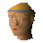
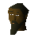

Varrock
Town at 3211, 3450 · Kingdom Of Misthalin
Open on the world map → Open in knowledge graph → Below: Varrock (underground)
NPCs
| NPC | Level | Spawns | Notable drops |
|---|---|---|---|
| 21 | 3 | Coins, Steel arrow, Iron dagger, Body talisman | |
| 3 | |||
| 3 | |||
| 1 | |||
| 1 | |||
| shop | 1 | ||
| shop | 1 | ||
 Romeo | 1 | ||
| 1 | |||
| shop | 1 | ||
| shop | 1 | ||
| shop | 1 | ||
| 1 | |||
 Zaff | 1 |